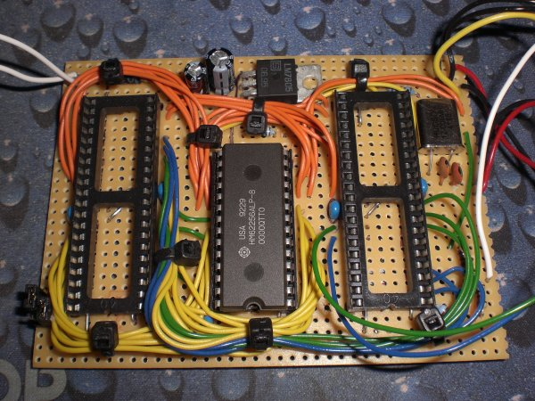

Once upon a time computers used to be really simple but now they have evolved into continually updating behemoths with so many commands, languages and APIs that I wonder how anyone is ever expected to learn how to program them.
I thought I'd try to reverse the trend and design something with the same kind of power as a Sinclair ZX80/81 or Apple I with the minimum of chips. The result is 'Old Skool' a three (maybe four later) chip computer for running BASIC programs that plugs into your telly.
'Old Skool' is pretty simple; two microcontrollers and a 32K RAM chip. The board slots into a small aluminum enclosure which has a power switch on the front; A/V, PS/2 and power sockets on the back. The chip socket on the left will house a 18F4620 programmed with a dialect of BASIC. It can generate a 15-bit address to select a location to read or write in the static RAM chip (centre).
The socket on the right holds an 18F4525 or another 18F4620 which uses the 'Parallel Slave Port' feature so it can be read or written like the RAM but without an address. This second microcontroller generates a PAL or NTSC composite video picture and is interfaced to a standard PS/2 keyboard.
The asute will have noticed that there is no way to load or save programs in this configuration. A later phase will add an SD/MMC card interface to support this.
The card is built and tested for both devices. Although both the 18F4525 and 18F4620 are part of the same 'family' of chips there appears to some important internal differences which affects the video generation. I get slightly different pixel images from each of them.
The video chip generates a blank and white 40x25 character based screen which supports inverse video and blinking. I'm working on code to support VT-100 like control sequences. The code can read the PS/2 key presses as they occur but I haven't managed to write back to the keyboard yet (e.g. to change the Caps Lock/Num Lock LEDs).
I've only written enough code for the interpreter chip to test the access to the RAM at the moment. I want to get the video and keyboard working before getting stuck into this.
| << Back |
|
Contents |
© Copyright 2009 Andrew John Jacobs. All rights reserved.
All trademarks and service marks are the properties of their respective owners.